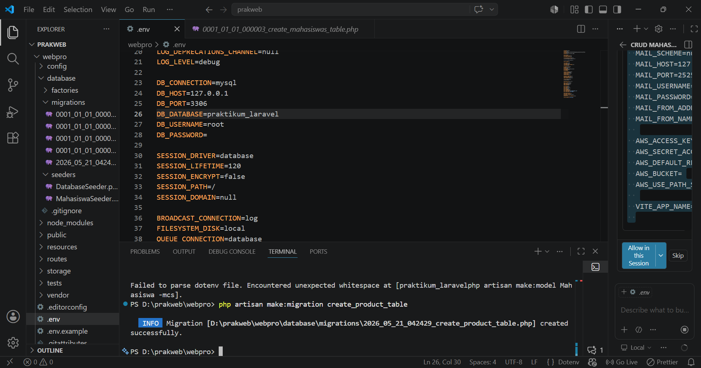

Pendahuluan
Laravel merupakan framework PHP yang digunakan untuk membangun aplikasi web modern dengan konsep MVC (Model View Controller). Laravel menyediakan berbagai fitur yang mempermudah developer dalam proses pengembangan aplikasi web seperti migration, seeding, routing, model, controller, dan blade template.
Pada praktikum ini dilakukan pembuatan aplikasi CRUD sederhana menggunakan Laravel mulai dari konfigurasi database hingga menampilkan data menggunakan view blade.
Tujuan Praktikum
- Memahami konsep migration Laravel
- Memahami penggunaan seeding database
- Memahami routing Laravel
- Membuat model dan controller
- Membuat view menggunakan blade template
- Membuat CRUD sederhana Laravel
Langkah-Langkah Praktikum
1. Konfigurasi Database
Langkah pertama yaitu melakukan konfigurasi database pada file .env agar Laravel dapat terhubung dengan MySQL.
DB_CONNECTION=mysql DB_HOST=127.0.0.1 DB_PORT=3306 DB_DATABASE=praktikum_laravel DB_USERNAME=root DB_PASSWORD=

2. Migration
Migration digunakan untuk membuat struktur tabel database menggunakan kode program Laravel.
php artisan make:migration create_products_table
Setelah migration dibuat, isi struktur tabel products seperti berikut.
Schema::create('products', function (Blueprint $table) {
$table->id();
$table->string('name');
$table->integer('price');
$table->text('description');
$table->timestamps();
});

3. Menjalankan Migration
Jalankan migration menggunakan artisan agar tabel otomatis dibuat pada database.
php artisan migrate

4. Seeding Database
Seeding digunakan untuk menambahkan data awal atau data dummy ke database.
php artisan make:seeder ProductSeeder
Tambahkan data pada file ProductSeeder.php.
DB::table('products')->insert([
[
'name' => 'Laptop',
'price' => 7000000,
'description' => 'Laptop untuk pemrograman'
],
[
'name' => 'Mouse',
'price' => 150000,
'description' => 'Mouse wireless'
]
]);

Setelah data seeder selesai dibuat, jalankan perintah berikut.
php artisan db:seed

5. Routing Laravel
Routing digunakan untuk menentukan URL dan halaman yang akan ditampilkan oleh aplikasi Laravel.
Route::resource('products', ProductController::class);
6. Membuat Model
Model digunakan untuk berinteraksi dengan database menggunakan Eloquent ORM Laravel.
php artisan make:model Product
class Product extends Model
{
protected $fillable = [
'name',
'price',
'description'
];
}
7. Membuat Controller
Controller digunakan untuk mengatur logika aplikasi dan menghubungkan model dengan view.
php artisan make:controller ProductController
class ProductController extends Controller
{
public function index()
{
$products = Product::all();
return view('products',
compact('products'));
}
}
8. Membuat View Blade
View digunakan untuk menampilkan halaman antarmuka kepada user.
<h1>Daftar Produk</h1>
<ul>
@foreach ($products as $product)
<li>
{{ $product->name }}
</li>
@endforeach
</ul>
9. Resource Route
Resource route digunakan untuk mempermudah pembuatan CRUD secara otomatis pada Laravel.
Route::resource('products', ProductController::class);
Hasil Praktikum
Berdasarkan praktikum yang telah dilakukan, aplikasi Laravel berhasil dijalankan dengan baik. Migration berhasil membuat tabel database, seeding berhasil menambahkan data awal, routing berhasil menghubungkan URL, serta model, controller, dan view berhasil digunakan untuk menampilkan data produk.
Kesimpulan
Berdasarkan praktikum yang telah dilakukan dapat disimpulkan bahwa Laravel mempermudah proses pengembangan aplikasi web menggunakan konsep MVC. Fitur migration, seeding, routing, model, controller, dan blade template membantu developer dalam membuat aplikasi CRUD secara lebih terstruktur, rapi, dan efisien.
Link Github Project
Source code project Laravel CRUD dapat diakses melalui link Github berikut:
Github Project Kembali